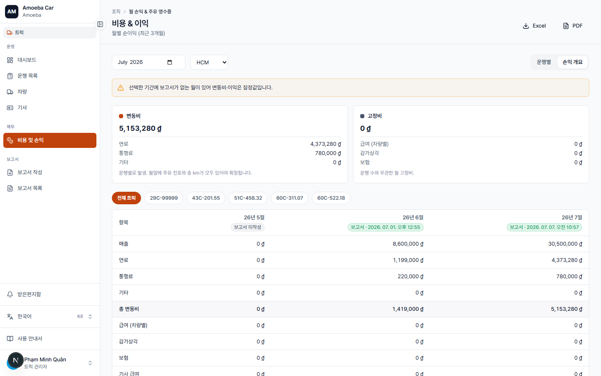
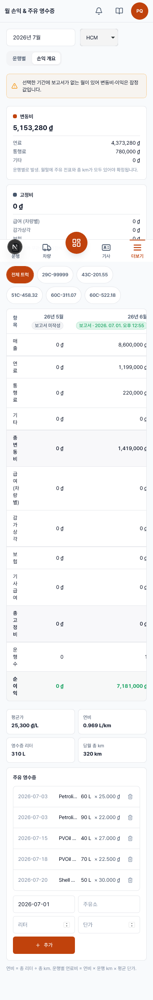

손익 개요
- URL
/truck/pnl- 내용
- 지역·월별 손익 집계 + 주유 영수증


사용 단계
- 기간/지역을 선택해 최근 3개월 매출·비용·이익 집계 확인.
- 각 월 열 아래에 보고서 작성됨 · 시각 또는 미작성 배지 표시.
- 지역 필터로 HCM / 동나이 / Baiksan 효율 비교, 또는 차량별 필터.
- 특정 지역을 선택하면 아래에 주유 영수증 블록 표시: 4개 지표(평균 단가, 연비, 총 영수증 리터, 월 총 km)와 영수증 목록.
- 새 영수증 입력: 날짜·주유소·리터·단가 입력 후 추가.
- 필요 시 Excel 내보내기.